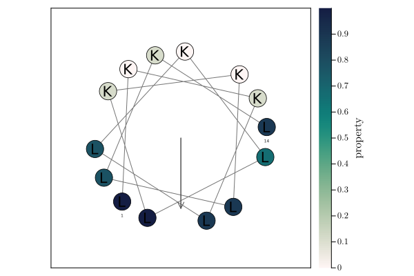
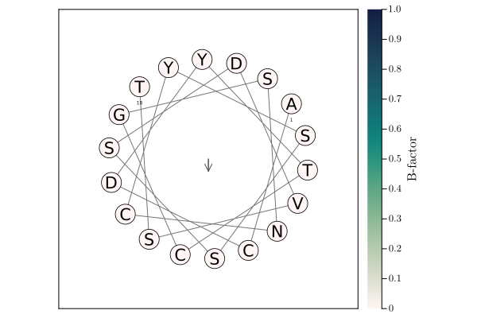

Helical wheels
A helical wheel is a projection of an α-helix along its axis. Consecutive residues are separated by 100° (3.6 residues per turn), so residues that face the same side of the helix appear next to each other in the wheel. Coloring the residues by a per-residue property shows at a glance which face of the helix carries that property, for example, which face interacts with the membrane, the solvent or another protein.
Drawing a helical wheel
helical_wheel receives the sequence of the helix (one-letter codes) and one value per residue, in the same order. Any property can be used: coordination numbers, SASA, RMSF, interaction energies, conservation scores, etc. Plots must be loaded.
using PDBTools, Plots
sequence = "LKKLLKLLKKLLKL"
values = [1.0, 0.1, 0.2, 0.9, 0.8, 0.1, 0.7, 1.0, 0.2, 0.1, 0.9, 0.8, 0.2, 0.9]
p, info = helical_wheel(sequence, values; colorbar_title = "property")
p
The function returns the plot and a named tuple with the mean hydrophobicity of the helix and its hydrophobic moment:
info(mean_hydro = 0.5471428571428572, μ = 0.8131864829616079)Some details of the drawing:
- the residues are placed at 100° from each other; after 18 residues (5 turns) a new ring starts, with a larger radius, so that long helices do not overlap;
- the arrow is the hydrophobic moment, and the wheel is rotated so that it always points down: the hydrophobic face of the helix is at the bottom of the figure;
- the first and last residues are labeled with their residue numbers (keyword
residue_numbers); - by default the values are normalized to
[0, 1](normalize = true). To compare several helices on the same color scale, usenormalize = falseand fix the limits withclims.
From a structure
With a selection of atoms, the sequence, the residue numbers and the values are taken from the structure itself. The values are computed from a per-atom property (by default, the beta column of the PDB file) combined for each residue by aggregate:
- use
aggregate = sumfor additive properties, such as atomic contributions to a coordination number written in thebetacolumn; - use the mean (default) for intensive properties, such as B-factors or RMSF.
The selection must contain a single chain.
pdb = read_pdb(PDBTools.test_file("structure.pdb"), "protein")
first_atom = first(pdb)
helix = select(pdb, at -> chain(at) == chain(first_atom) && resnum(at) < resnum(first_atom) + 18)
p, info = helical_wheel(helix; colorbar_title = "B-factor")
p
The property keyword selects another per-atom property, for example property = occup for the occupancy column.
Values from other packages
The values can come from any source. For example, with a ResidueContributions object rc from ComplexMixtures.jl, the contribution of each residue at a distance d is:
id = findfirst(>=(d), rc.d)
values = [rc.residue_contributions[i][id] for i in eachindex(rc.residue_contributions)]
p, info = helical_wheel(sequence, values; colorbar_title = "CN")Hydrophobic moment and per-residue values
hydrophobic_moment computes the mean hydrophobicity and the hydrophobic moment (Eisenberg) of a sequence, without drawing. The default hydrophobicity scale is that of Fauchère & Pliska; another scale can be given as a dictionary from one-letter codes to values, with the hydrophobicity keyword.
hydrophobic_moment("LKKLLKLLKKLLKL")(mean_hydro = 0.5471428571428572, μ = 0.8131864829616079, μx = 0.5974168932836933, μy = 0.5516931318139909)residue_values returns the per-residue values, the sequence and the residue numbers of a selection, as used by helical_wheel:
values, sequence, numbers = residue_values(helix; aggregate = sum)
sequence"ACDYTCGSNCYSSSDVST"Reference
PDBTools.helical_wheel — Function
helical_wheel(sequence, values; kwargs...)
helical_wheel(atoms; aggregate = mean, property = beta, kwargs...)Draw a helical wheel with each residue colored by values[i]. values can be any per-residue property (coordination number, SASA, RMSF, interaction energy, conservation, etc.), in the same order as the sequence.
With a vector of atoms, the sequence, the residue numbers and the values are taken from the structure with residue_values.
Arguments
sequence::AbstractString: sequence of the helix (one-letter codes).values::AbstractVector{<:Real}: one value per residue.
Keyword arguments
residue_numbers = 1:length(sequence): actual residue numbers (used only in the labels of the first and last residues).normalize = true: apply min-max normalization to[0, 1].colormap = :tempo: color map of the values.colorbar_title = "": title of the color bar.clims = nothing: fixed limits of the color scale, e.g.(0, 1). Use to compare several helices on the same scale.hydrophobicity = PDBTools.FAUCHERE_PLISKA: scale used in the hydrophobic moment.show_moment = true: draw the arrow of the hydrophobic moment.
Returns (plot, (mean_hydro = ..., μ = ...)).
Examples
julia> using PDBTools, Plots
julia> pdb = read_pdb(PDBTools.test_file("structure.pdb"), "protein");
julia> helix = select(pdb, "chain A and resnum >= 10 and resnum <= 25");
julia> p, info = helical_wheel(helix; aggregate = sum, colorbar_title = "CN");Values from other packages can be passed directly. For example, with a ResidueContributions object rc of ComplexMixtures.jl, the contribution of each residue at distance d is:
id = findfirst(>=(d), rc.d)
values = [rc.residue_contributions[i][id] for i in eachindex(rc.residue_contributions)]
p, info = helical_wheel(sequence, values)PDBTools.hydrophobic_moment — Function
hydrophobic_moment(sequence; hydrophobicity = PDBTools.FAUCHERE_PLISKA)Compute the mean hydrophobicity and the hydrophobic moment (Eisenberg) of an α-helix with the given sequence (one-letter codes), assuming 100° between consecutive residues.
Returns a named tuple (mean_hydro, μ, μx, μy), where μ = √(μx² + μy²) is the moment per residue.
Example
julia> using PDBTools
julia> m = hydrophobic_moment("LKKLLKLLKKLLKL");
julia> round(m.μ; digits = 2)
0.81PDBTools.residue_values — Function
residue_values(atoms; aggregate = mean, property = beta)Group the atoms by residue and reduce property of the atoms of each residue with aggregate. Returns (values, sequence, residue_numbers).
aggregate: any function that takes a vector, e.g.sum,maximum,minimum. The default is the mean. Usesumfor additive quantities (e.g. atomic contributions to the coordination number) and the mean for intensive properties (B-factor, RMSF).property: function applied to each atom (default:beta; can beoccup,charge, etc.).
The selection must contain a single chain.
Example
julia> using PDBTools
julia> atoms = read_pdb(PDBTools.test_file("structure.pdb"), "protein and resnum <= 10");
julia> values, sequence, numbers = residue_values(atoms; aggregate = sum);PDBTools.FAUCHERE_PLISKA — Constant
FAUCHERE_PLISKAHydrophobicity scale of Fauchère & Pliska (1983), as a Dict{Char, Float64} indexed by the one-letter residue code. Default scale of hydrophobic_moment and helical_wheel.